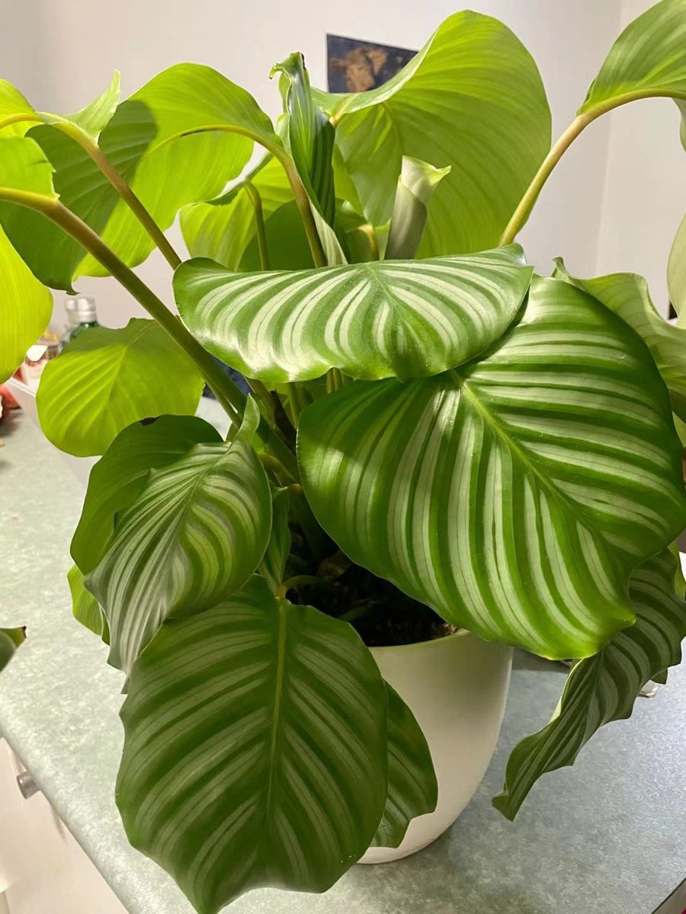

店のこと
差出人欄
お店について確認できているのは、所在地とInstagramのアカウントだけです。ここでは、確認できたことだけを葉書の差出人欄のように並べます。
確認できていること
- 店名は「EDEN TO CAFE(エデン・トゥ・カフェ)」、業種はカフェ
- 所在地は福岡県飯塚市高田1679-2(〒820-0079)
- 電話番号はなし。連絡はInstagramから
- 営業時間・定休日・メニュー・価格・ご予約・駐車場は準備中
差出人欄
820-0079福岡県飯塚市高田1679-2
想像してみる(制作側の創作)
切手シートに、6つの緑と窓辺。
この切手シートは、「エデン」の連想で選んだ植物や窓辺の写真を並べた制作側の遊びです。お店の実際の様子・考え・メニューとは関係がありません。写真は国外または撮影地不明のフリー素材です。
